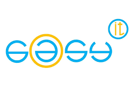

Esperienza in azienda
e@sy it di Cristiani Pierre
Via Argine Destro 185, 18100 Imperia (IM)
La mia esperienza presso l'azienda è stata molto formativa poiché ho svolto diverse attività.
Ho avuto l'opportunità di lavorare presso e@sy IT, una piccola azienda specializzata nella
consulenza informatica, nell'assistenza tecnica e nella riparazione di personal computer,
notebook, smartphone e tablet.
Grazie a questa esperienza, ho avuto l'opportunità di ottenere una visione a 360 gradi del
lavoro all'interno di un'azienda. Essendo il proprietario anche l'unico lavoratore, ho
potuto osservare da vicino la gestione dell'impresa e tutti gli aspetti che ne fanno parte.

Esperienze piu significative
Questa esperienza mi ha arricchito sia personalmente che professionalmente, offrendomi una
solida formazione in tutti i campi dell'informatica. Mi ha permesso di acquisire competenze
pratiche che saranno spendibili in un futuro percorso lavorativo. Durante il
mio tirocinio, ho avuto l'opportunità di esplorare diverse aree dell'informatica,
tra cui:
progetazione di una rete telefonica aziendale.
Ho avuto l'opportunità di imparare molte cose riguardo alla gestione della connettività e
alla gestione dei centralini telefonici in una grande azienda. Ho potuto apprezzare quanto
sia importante considerare diversi aspetti per garantire una connessione affidabile e
stabile, nonché comprendere le complessità e le strategie coinvolte nel gestire i sistemi
telefonici di un'azienda di grandi dimensioni.
realizzare un cablaggio strutturato
Ho effettivamente eseguito personalmente l'installazione di un sistema di cablaggio strutturato, ottenendo un'esperienza pratica nel ruolo di tecnico. Ho collegato fisicamente i cavi Ethernet e, seguendo un progetto specifico, li ho connessi a uno switch. Successivamente, ho collegato gli switch agli host di rete che erano cablati.
gestire e saper riparare un server
durante la mia esperienza ho avuto l'ooportunita di interfaciarmi con un server(macchine d'azzardo) aveva un problema di acesso dovuto a l'impostazione di dhcp da parte di un dipendete del azienda. impostando l'ip statico è tornato il servizio questa esperienza mi ha mostarto quello che ho imparato a lezzione.
Documento con tutte
le attivita svolte in azienda
13 giugno 2022 - 22 luglio 2022
Tema: realizzazione di un progetto arduino che tocchi almeno 2 punti dell' agenda 2030.
Grazie a questa esperienza ho potuto mettere alla prova le mie capacità inventive e da programmatore,
che nonostante l'utilizzo di componenti, a me sconosciuti sono riuscito a realizzare un progetto
funzionante nel tempo richiesto
Attraverso la Cisco Networking Academy ho acquisito diverse certificazioni e competenze nei
seguenti campi: IOT, CYBERSECURITY, LINUX, IT Essentials


.png)